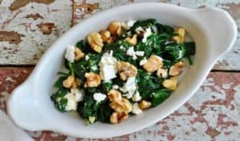
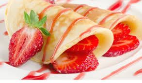
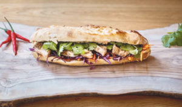

Our Menu Sections
Soups
Soup is a liquid dish, typically made by boiling ingredients like meat, vegetables, or grains in broth or water. It can be served hot or cold and comes in a wide variety of styles, from thin and clear to thick and creamy.
Soup OptionsSalads
A salad is a dish, typically cold, made from a mixture of ingredients such as raw or cooked vegetables, fruits, meats, or pasta, often bound with a dressing and served with a variety of toppings.
Salad OptionsDesserts
Dessert is a course that concludes a meal; the course consists of sweet foods, such as cake, biscuit, ice cream, and possibly a beverage, such as dessert wine or liqueur.
Dessert OptionsSandwiches
Soup is a liquid dish, typically made by boiling ingredients like meat, vegetables, or grains in broth or water. It can be served hot or cold and comes in a wide variety of styles, from thin and clear to thick and creamy.
Sandwich OptionsBreakfast
Breakfast is the first meal of the day usually eaten in the morning. The word in English refers to breaking the fasting period of the previous night. Various "typical" or "traditional" breakfast menus exist.
Breakfast Options